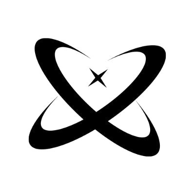

FASE SELESAI
INO
Fondasi komunitas dan partisipasi awal telah terbentuk.

NOAH NEXUSPROTOCOL 2.0NOAH NEXUS PROTOCOL 2.0
Smart contract blockchain yang transparan, terverifikasi, dan dirancang agar setiap partisipasi memberi energi pada jaringan.
STAKING NOAH NEXUS
Jantung ekosistem NOAH 2.0
Staking Noah bekerja melalui smart contract. Aktivitas dan mekanisme sistem dapat ditinjau secara terbuka di jaringan blockchain.
ROADMAP PROJECT
Perjalanan Noah Nexus dibangun melalui tahapan yang terukur: dari fondasi komunitas hingga infrastruktur blockchain terbuka.
Fondasi komunitas dan partisipasi awal telah terbentuk.
Partisipasi komunitas memperkuat ritme dan utilitas ekosistem.
Ekspansi pengalaman serta utilitas digital komunitas.
Infrastruktur terbuka untuk peradaban blockchain.
STAKING
Staking adalah cara untuk berpartisipasi dalam pertumbuhan ekosistem NOAH secara transparan dan on-chain.
Tax profit 50:50 dari setiap buy, sell, dan swap XPULS.
Dikenakan saat wallet menjual dengan keuntungan.
Mekanisme pengurangan supply yang mendorong nilai ekosistem.
Arus kas internal sistem yang terus berputar ON-CHAIN
PILIH MASA STAKING
Informasi skema staking. Selalu pahami mekanisme smart contract dan risiko aset digital sebelum berpartisipasi.